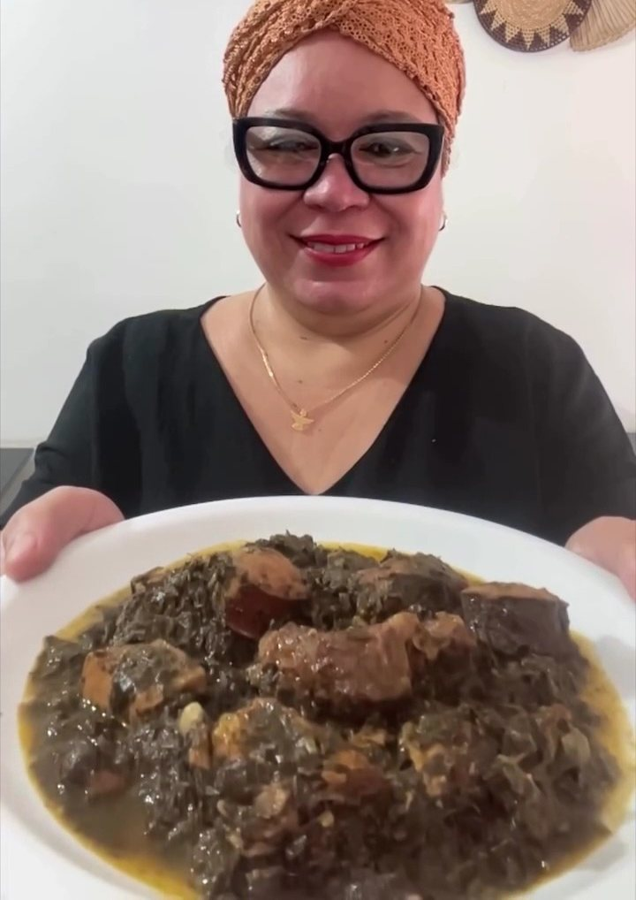
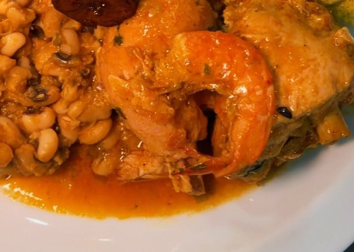
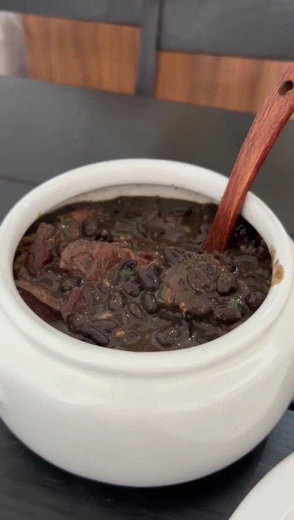
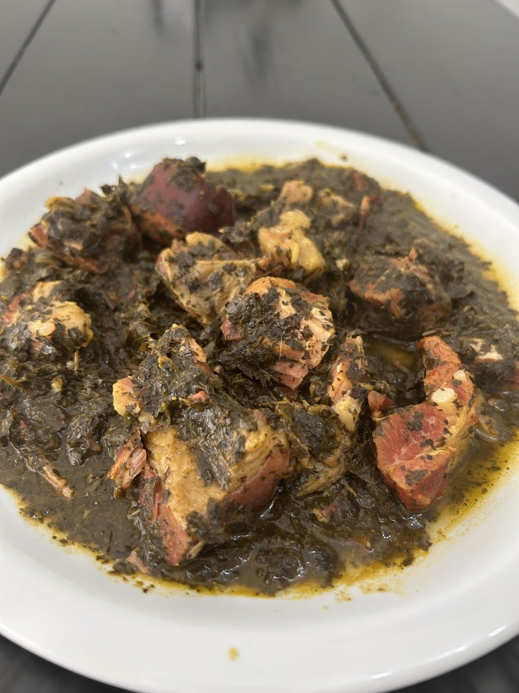
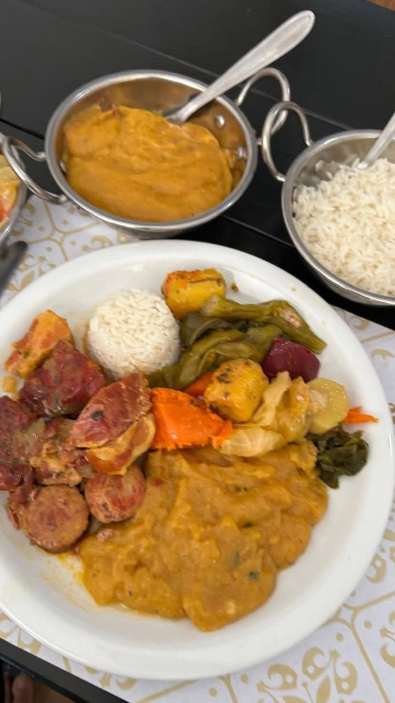
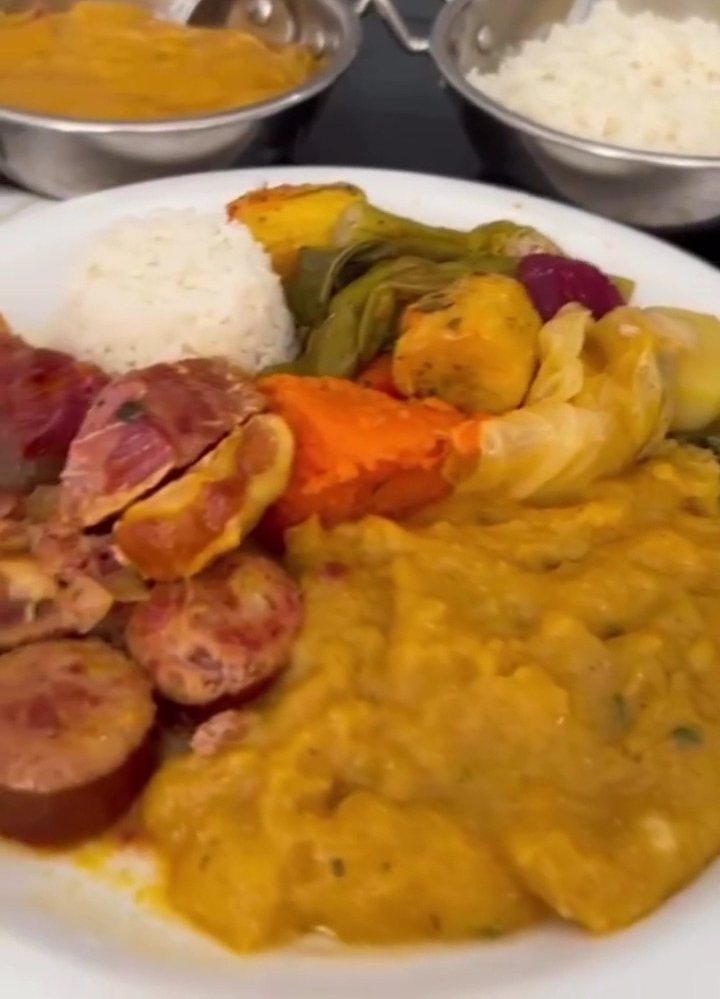

Comida Baiana
Comida baiana completa
Frango no dendê ou moqueca de camarão, siri ou mista, com caruru, vatapá, feijão fradinho, farofa, arroz e banana da terra. Para 1, 2 ou 3 pessoas, a partir de R$ 60,90.
 Comida regional baiana · Pituba
Comida regional baiana · Pituba
Caruru, vatapá, xinxim de bofe, moquecas e feijoada, com o tempero que passou da mãe, Zuleide, para a filha, Cláudia. Peça pelo WhatsApp para entrega ou retirada, ou venha ao buffet livre de quinta a domingo.


Por onde começar
Comida baiana, moquecas, regional e strogonoff, com busca e o “+” para pedir.
Abrir o cardápioPedidoA sacola soma o total e a mensagem sai pronta para a casa.
Montar pedidoBuffet livreComida baiana à vontade no salão da Pituba, por R$ 74,90.
Ver o buffetA históriaUma cozinha de família que começou vendendo quentinhas em 2015.
Conhecer a famíliaDa cozinha da Zu
“Comida de família, memória e muito sabor”, como a própria casa escreve. Alguns pratos do cardápio:
Frango no dendê ou moqueca de camarão, siri ou mista, com caruru, vatapá, feijão fradinho, farofa, arroz e banana da terra. Para 1, 2 ou 3 pessoas, a partir de R$ 60,90.
Bofe cozido lentamente no dendê, com amendoim, castanha, leite de coco e camarão defumado. Para 1 pessoa, R$ 50,90.
De camarão, de siri catado ou mista, com pirão feito com o caldo da moqueca, arroz e farofa de dendê. Para 1 pessoa, R$ 80,90.

Feijão mulatinho com as carnes da feijoada, arroz, farofa crocante e molho de pimenta. Para 1 pessoa, R$ 63,90.

Entre os pratos da casa citados na ficha do Google, ao lado de sarapatel e mocotó. No buffet de quinta a domingo.

Nas fotos da casa, com o recado: “Quinta é dia de Cozido”. Confirme o dia pelo WhatsApp.

De Dona Zu para Cláudia
“Cláudia cresceu vendo a mãe cozinhar e hoje leva essa tradição para cada prato do Sabor da Zu.”Sabor da Zu, no Instagram (29/09/2026)
O buffet de quinta a domingo
“O problema do nosso buffet é só um: decidir por onde começar.”Sabor da Zu, no Instagram (01/10/2026)
Nas últimas semanas, a casa mostrou dobradinha e mininico de carneiro no buffet, e também a opção a quilo (preço no salão).



Peça pelo WhatsApp
O próprio Linktree da casa já pede: Peça pelo Whatsapp e economize taxas de aplicativos
. Aqui o cliente toca no “+”, vê o total na sacola e a mensagem sai organizada para o (71) 98536-8620.
Peça pelo cardápio digital. O pedido cai no painel da casa, com Pix, cupom e acompanhamento pelo link, e você ainda manda pronto no WhatsApp.
Abrir o cardápio digitalQuem já pediu
Pense em uma comida DELICIOSA?! Pois é, a Sabor da Zu caprichou no sabor, na organização dos alimentos e principalmente no atendimento. Primeira vez de muitas outras que irei me deliciosas com as comidas da Cláudia. Comida afetiva é isso, nós faz querer comer SEMPRE!
Comida deliciosa… fizemos o primeiro pedido e todos adoraram. Tudo bem organizado e muito bem temperado
Tudo muito saboroso, os produtos de boa qualidade, muito bem embalados.
Trechos de avaliações públicas no Google, com o nome abreviado. Nota e total consultados em 02/10/2026.
Galeria
Como funciona
O almoço sai de terça a domingo, das 11h às 15h. Na loja on-line da casa, o pedido fica pronto em 25 a 40 minutos.
Dúvidas frequentes
Pelo WhatsApp (71) 98536-8620. Nesta página, monte o pedido com o “+” e mande a mensagem pronta.
A casa atende vários bairros da cidade, mas a lista e a taxa não estão publicadas: confirme pelo WhatsApp.
Sim. A retirada é na R. Maranhão, 445, Pituba.
De terça a domingo, das 11h às 15h. Segunda-feira a casa fecha.
R$ 74,90 por pessoa, de quinta a domingo, segundo o Instagram da casa. Também há opção a quilo: consulte o preço no salão.
Não estão publicadas: confirme pelo WhatsApp.
Sim, pelo WhatsApp. Há panelas de 500 g e 1 kg e os kits 1 e 2. Veja a página de comida baiana.
Bateu a fome?
Peça pelo WhatsApp para entrega ou retirada, ou venha almoçar no salão da Pituba, de terça a domingo, das 11h às 15h.
Junto com este site · OiComanda
O cardápio daqui de cima é só a vitrine. Na hora de pedir, o cliente vai para o cardápio digital da casa, e o pedido cai no painel de vocês, com aviso no celular e sem comissão. Toque no celular ao lado: é o cardápio de verdade, já com os seus pratos.
O cliente monta o pedido com fotos, sabores, bordas e adicionais; o preço soma sozinho.
Abrir →Cada pedido chega organizado, com endereço e pagamento; vocês avançam o status e imprimem a comanda.
Abrir →O cliente paga na hora e o dinheiro cai direto na conta da casa.
O cliente vê quando o pedido saiu, sem ligar para perguntar.
Primeira compra, frete grátis, dia da semana: vocês criam em segundos.
A cada tantos pedidos, um prêmio. O selo conta sozinho pelo WhatsApp do cliente.
O cardápio pergunta o aniversário e o cliente ganha um mimo no dia.
Todos os links da casa numa página com a cara de vocês, para pôr no Instagram.
Abrir →O cliente dá nota e comentário; as respostas chegam no painel.
O cliente pede pela mesa e o pedido chega como “Mesa 5”, sem garçom correndo.
Quem mais pede, quem sumiu e a mensagem pronta para chamar de volta.
Vendas, tíquete médio e os pratos que mais saem.


30 dias grátis, sem cartão e sem compromisso.